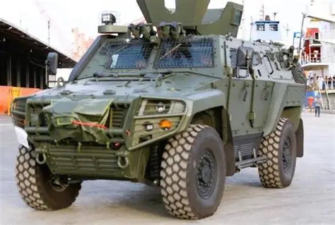

Los vehículos militares están diseñados para transporte, defensa y apoyo táctico. Su blindaje y potencia los convierten en herramientas esenciales en operaciones terrestres.
Tipos de vehículos

Tanque blindado
Vehículo pesado con blindaje reforzado y alta potencia de fuego. Ideal para operaciones de asalto y defensa.

Vehículo táctico ligero
Utilizado para transporte rápido de tropas y equipamiento. Destaca por su movilidad en terrenos difíciles.